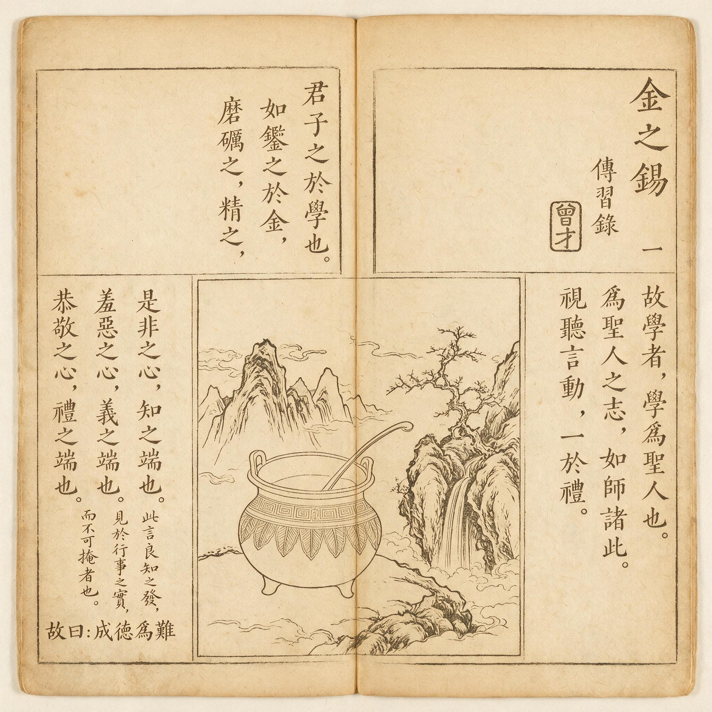

第 15 章
语录成经即为难
一部书越是被当作经来读，它对作者的背叛就越彻底。这个判断初听反常，却早已埋在“证道”这个译名里。

《传习录》明清刻本内页书影
AI 生成插图，非史实影像。
十九世纪末，海伦娜·布拉瓦茨基、亨利·斯太尔·奥尔科特与威廉·关·贾奇在纽约创立神智学协会，研究神秘主义与精神力量。中文世界后来称它为“证道学协会”，又称“通神协会”。“证道”二字原指个人对道的体认，如今却挂在一个试图把灵性体验公共化的机构头上。把私密的觉悟转成可传播的知识，这个动作本身就暗含风险。
三个半世纪以前，江西一群儒生对王阳明的言语做了类似的事。他们把老师在讲学、书信中即兴说出的话收集、筛选、编纂、刊刻。薛侃在江西刻印的《传习录》最为著名。
那一刻，心学开始从师徒面对面“因病立方”的口传，转向依靠固定文本跨地域传播的书传。书籍让思想走得更远，也让思想失去语境。成经之日，即为难之始。
徐爱死后，那卷最早的《传习录》在亲近弟子间以抄本流传。记录者已死，文字反而获得近乎殉道者的权威。
不是因为他编得最严整，正是因为他无法再出来为自己的记录负责，后人便只能把他的文字当作不可修改的遗物。权威由此确立。这种权威一旦被人看见，模仿的欲望便压制不住。
更要害的是，徐爱所录只是早期讲学。正德十四年以后，王阳明在江西、在军旅、在政治高压下说过许多更尖锐、更复杂的话。那些话大多与“知行合一”的旧说不同，向着“致良知”的方向移动。徐爱录不载这些内容。四方问学者日增，他们渴望拥有老师的新言语，不愿只守着过时的抄本。
于是，一个分散、自发、彼此竞争的编纂运动在正德十五年前后悄然展开。薛侃、陆澄、南大吉、钱德洪各自动手。他们在不同省份、以不同原则整理亲闻或转抄的语录。每个人都真诚地想保存老师的教诲，每个人也都在暗中争夺解释的资格。
徐爱不在了，没有人能协调版本之间的差异，也没有人能裁定哪种记录更接近原意。心学传播从一开始就没有单一中心。
薛侃字尚谦，号中离，广东揭阳人，正德十二年中进士后师从王阳明。他性格刚毅，认准方向便全力投入。
正德十六年，他在江西刻成《传习录》，把徐爱录之外的内容大量纳入。这是《传习录》第一次以较大规模进入公共流通。薛侃在序跋里说明编纂原则，核心是“存真”。凡亲闻或得自可靠传抄者收录，有疑问者宁缺毋滥。
这个原则听起来稳妥，落到操作层面却充满陷阱。什么才算“真”？逐字记录老师的话，为什么反而可能失真？问题不只在记录者的记忆。即使字字准确，脱了现场仍可能面目全非。
因为王阳明说话不是面向虚空，而是面向一个具体的人。提问者的性情、学养、此刻的精神状态，甚至身体状态，都影响他如何说。同一句话说给初学者听是一种侧重，说给旧门人听是另一种侧重。心平气和时说是一个样子，军务倥偬中说又是另一个样子。只记下字句，丢掉问者身份、对话情境和当时处境，所谓“一字不差”恰恰可能差得更远。
薛侃当然明白老师“因病立方”的特点。但他面临一个难题：若把所有情境细节都写进去，书便不成书，读者仍无法回到那个不可复制的气场。编纂必然是一种简化，一种选择，一种变形。
为了可读性和传播性，他不得不做几乎所有编者都会做的事：去掉大部分提问者的身份与语境，只留下王阳明本人的回答，把它们变成独立的语录条目。这一步在技术上合理，在哲学上却非常要命。它剥离了文本肉身。徐爱录之所以被亲近弟子看重，是因为它多少还保留了问答之间的缝隙，让文字带着具体对话的体温。薛侃刻本要获得公共传播，就必须把这些肉身剥除，只留下可以单独引用的句子。
于是，同一卷书里便出现两条关于“知行合一”的语录。它们相隔不过数页，并置阅读时却显出一种内在张力。
第一条说：“知是行的主意，行是知的功夫。知是行之始，行是知之成。”这里强调知与行本体上的合一，知中有行的发端，行中有知的完成，二者不可分割。
第二条说：“知而不行，只是未知。”这里转向功效论：若声言知道却不去做，那便不是真知。它不是在说本体层面的合一，而是在说真知必然引向行动。
孤立地看，两条语录都成立，都是王阳明在不同场合针对不同问题给出的回答。
第一条很可能是在回应一个熟悉朱子“知先行后”的学者，王阳明用本体论语言击碎他把知行割裂的理解。第二条则更像回应一个具体的行为困境：某弟子说自己知道该做什么，却总是做不到。王阳明用斩截的判断击碎他的自我辩解。
在讲学现场，这两种侧重不会造成困惑。提问者明白自己在问什么，旁听者也能感到老师说话的针对性。然而一旦抽离语境，被并排印在纸上，两条语录就像两把各自磨利的刀，互相碰撞。
后世读者会追问：如果“知而不行只是未知”，那么“知是行之始”中的“知”究竟是什么？是不是在真知之前还有一个假知？假知的“始”算不算行？如果算，它与未知如何区别？如果不算，“知是行之始”中的知又指哪个阶段？
这些问题，在现场可以被王阳明一句话、一个手势化解。在文本传播中，却成为读者必须自行解决的逻辑难题。不同读者用自己的知识背景和性情去解决这些难题，得出的理解便截然不同。薛侃刻本出版后发生的正是这种情形。文本越权威，误读的反作用越大。
把心学抽离到纯粹概念层面，一眼望去似乎确有逻辑漏洞。反方阳明心学若有先验一致性，为什么同一部书中会出现如此分歧的表述？但回到当场就会明白，逻辑矛盾不是思想自身的矛盾，而是语境与重点的产物。书写把弹性误译为冲突。
麻烦远不止于知行合一。更棘手的是那些收入刻本的书信。陆澄所问最细，思辨性最强，王阳明给他的答书因此也最系统。
陆澄字原静，浙江归安人，王阳明在南京时收为弟子，后随至江西。他追问“致知”“格物”“心即理”的概念边界与逻辑衔接，王阳明的回答自然偏向理论辨析。这些回复在书信语境中恰当，因为它们针对陆澄的困惑。
然而一经薛侃收入刻本，脱离了问答关系，它们便容易被读者当成王阳明对这些概念的完整定义。写给一个人看的药方，成了人人可服的成方。
王阳明对此早有警觉。他在给友人信中说，听说有人把他的讲学语录辑录成书，心里很不安。讲学只是与人切磋，因病立方，本无定说；若执为定本，则害道多矣。
“因病立方，无有定说”这八个字既是他对自己的概括，也是他对书籍传播的根本警告。可他又没有阻止弟子刻书，反而默许，甚至赞许过。
为什么？因为他清楚，思想要突破亲炙弟子的小圈子，必须有书籍。明代中期，一个学者的影响极大程度上取决于著作能否刊刻。只靠口传，能听到的人有限。何况朝廷对他的政治态度并不友善，学说随时可能被禁。生前不把著作刻出来，一旦遭遇政治打压，思想恐将湮没。
这是真实的两难。传播的需要与传播的代价互为表里。他的默许不是虚伪，而是无法解决的结构性矛盾。他一方面希望言语不被人当作定本，另一方面又不能不让人把言语变成定本。这个裂隙无法缝合，只能带着它继续讲学、继续默许、继续担忧。
这种矛盾在在世弟子群中迅速放大。薛侃刻本以外，陆澄整理问学书札，南大吉在绍兴刊刻晚年语录，钱德洪后来更编辑文录。每一个人都自认“存真”，但每一种“存真”都以自己的记忆和判断为准。于是出现了不同版本间微妙而不容忽视的差异。群像并置时，这些差异更加醒目。
陆澄的文本偏向义理辨析，南大吉的文本突出“致良知”的晚年转向，钱德洪的编辑更重视文献的完备与体例。他们不是在编同一本书，而是在各自重建老师的形象。南大吉身为绍兴知府，刻书更方便，所录内容也更多地服务于本地讲会。陆澄书信的流布，则使心学带上了更强的理论色彩。
版本之间的出入并不都是恶意篡改。许多差异只是记录角度不同。但角度一旦固定为铅字，便不再只是角度，而成为读者看到的全部。争议随之而来。
薛侃刻本问世后，在江西、南直隶、浙江、广东、福建等地都有流传。初版印数已无法确知，从现存书目和文集提及频率看，数百部的流通规模并非夸张。翻刻本、抄本进一步扩大了实际读者群。这些文本进入书院、官学和私人藏书楼，成为士子讨论的对象。
公开质疑开始出现。有人从薛侃刻本中找出“心即理”与“格物”的关系问题：若理都在心内，格物所格为何物？若格心外之物，便违心即理；若格心内之物，“物”字又无从落实。
这个疑问在王阳明亲讲时可以被当场回应——他所说的“物”是“事”，是意之所发，格物即正其不正以归于正。但薛侃刻本把“物即事”的界定分散在若干条目里，没有集中呈现，读者很容易漏掉那个关键的概念转换。
另一个争议集中在“知行合一”的适用范围。不同读者引述不同语录，有人认为王阳明有时讲本体论层面的合一，有时讲真知必行的功效论，两者在逻辑上不能同时成立。这个争论在当时学术圈中引发相当广泛的回应。
这些质疑并非来自心学的反对者，而是来自认真阅读文本、试图理解心学的士人。他们的困惑是真诚的，问题也提得严肃。
因此，这些争论恰恰暴露了“语录成经”的内在悖论：为了传播，文本必须脱离语境；脱离语境后，它便无法再自我解释。读者不会等到王阳明亲自出面，他们只面对书页。
王阳明在嘉靖初年又一次流露忧虑。他说担心学者不察，徒以言语为学，不复反求诸心。这句话点中要害。
心学本来反对口耳之学，但书籍传播恰好提供了一条捷径：不必经过切身的“心”上体验，只靠记诵语录就能获得看似完整的知识。这种“知识”不是心学要传达的真知，而是一种新的、以心学话语为内容的口耳之学。这是王阳明一生中最深的悖论之一。他反口耳之学，却不得不借助口耳之学传播思想。他教人反求诸心，却无法阻止人们舍心逐书。
薛侃刻本的出版还有一层政治意义。正德十六年三月，武宗驾崩，世宗继位，朝局进入新一轮权力重组。王阳明平定宸濠之乱后，功高不赏，反而被猜忌。此刻，薛侃刻本在江西等地广泛流传，既是一种思想传播，也是一种政治表态。阅读、传抄、讨论《传习录》的士人，有不少是在借阅读表达对王阳明个人的支持。
政治维度让文本传播变得更加复杂。有的读者真心服膺心学，有的仰慕王阳明的功业，有的借阅读抒发对朝廷的不满。动机不同，理解方式自然不同。
于是，心学在公共领域中的传播出现了分叉：谈论“知行合一”“致良知”“心即理”的人越来越多，但这些概念被理解的方式越来越简化，越来越像口号，越来越脱离修身实践的具体语境。一位南京官员在给友人的信中抱怨，他遇到许多自称“服膺阳明”的人，其实只会背诵几条语录，问及如何在日常事务中致良知，便茫然不知所对。这类抱怨在嘉靖初年的士人圈中并不少见。口号越响，内里越空。
薛侃刻本的矛盾不可能由编纂者解决。书已经印出去，读者已经拿到手，他们不会等待薛侃出来解释，也不会等待王阳明本人补充。他们只面对纸上的字，并且有权按自己的理解去引用、去争论、去传播。印刷机一旦启动，作者就失去了对意义的垄断。
嘉靖元年至嘉靖五年间，不同省份的士人文集里可以读到对薛侃刻本若干语录的公开质疑。争议焦点集中在三四条核心概念上：知行合一是否同时具备本体与功效两层含义；心即理能否容纳格物；致良知如何从工夫论落到具体事务。
嘉靖二年初春，江西南昌府学的一名生员在灯下翻读新得的薛侃刻本《传习录》。他先读到“知是行的主意，行是知的功夫。知是行之始，行是知之成。”再翻过三页，又见“知而不行，只是未知。”
他停下来，把两处句子各抄在一张纸上，并排放着。头一句说知与行本是一体，知里有行，行里有知；后一句却说，只要不去行，就连知都不是。他觉得自己似乎同时看到了两个王阳明：一个在讲本体，一个在断功效。那一夜他反复比对，始终无法把两张纸上的话合成一个完整的道理。
屋外春雨落在瓦脊上，更鼓从远处传来，他提笔想在“知而不行”四字旁加一个圈，又划掉，最后只在页边写了两个字：“何解？”这页书后来被他的同窗看见，同窗又借去转抄，那两个字也被一并抄了过去。疑问就这样附着在文本上，随书籍再次扩散。
类似的情形在嘉靖元年以后并不少见。江西本地的生员往往把“知是行之始”当作入手处，认为只要一念发动处便是行，不必另起一段功夫；浙江一带的士人却更常引用“知而不行只是未知”，用它来责备那些空谈心性而不见事功的同道。广东潮州来的问学者受薛侃影响，又格外看重“心即理”在日用伦理中的落实，对知行合一的内部层次反而少加分辨。南直隶一带则有科场士子把这套话语写入制艺，引“知是行的主意”一句来佐证“知行并进”的策论，却完全不顾及王阳明立言的对话对象。同一部书，在不同的地域、不同的听讲传统和不同的现实需要里，已经长出截然不同的读法。
这些读法并非凭空而来。读者各自带着先前的师承、科举训练和性情倾向进入文本。书页不会反问，不会察觉读者的误解，不会按住某一页说“这里要连着前面那一条读”。讲学现场的那种调节能力，在刻本里完全不存在。王阳明当面讲“知行合一”时，看见弟子皱眉，便换一种说法；看见弟子自负地点头，便立刻加重语气。
他的话语始终贴着一个活人的反应在走。一旦这些话语被抽离成条目，那个活人就不在了。薛侃刻书时不是没有意识到这一点，他在序中提出“存真”，凡亲闻及得自可靠传抄者收录，有疑问者宁缺毋滥。他以为“存真”就是把可考的字句原样留住。
但嘉靖元年春天，当他收到同门从浙江寄来的信，信里提到有人因那两条知行语录公开争执，他才真正感到“真”字的分量。字句是真实的，语气和指向却已经丢失。一个江西朋友写信问他：你刻的书里，王先生一会儿说“知是行之始”，一会儿又说“知而不行只是未知”，到底哪一句才是定论？薛侃无法回答。
不是因为没有答案，而是因为答案必须回到那个已经不在场的对话现场里去。他在回信中只能说，老师平日里从不对着空处说话，总是对着某个人的某种病痛下药。可这样的解释印在纸上，本身又成了一条新的语录，同样可以被抽离、被曲解。
陆澄在湖州也有类似的困扰。他整理问学书札时追求概念的清晰，希望让初学者能够顺着书信的逻辑进入心学。他万万没想到，那些原本为回答自己个人困惑而写下的辨析，会被读者当作王阳明的最终定义。
有人拿着刻本中某封答陆澄书里关于“心即理”的表述，去质问一位主张朱子学的老儒，结果引起一场激烈的口舌之争。争执双方都引用同一段文字，却得出截然相反的结论。陆澄后来听人转述这场争论，心中颇为不安。他在给王阳明的信里说：“某之问，本为自家病痛，不意为天下口实。”王阳明回信劝他不必过于自责。
因为即使没有陆澄，别的弟子也会把话刻出去。世上需要书，书却必然带来误解。他在那封信里用了“以书害意”四个字。这四个字不是责怪薛侃，也不是阻止刻书，而是对一种结构性后果的清醒认识：书写在保存语意的同时，也封闭了语意自我修正的可能。口说时，一句话错了可以马上改；写成字，错了只能等待下一次刊刻，而刊刻永远赶不上误解的速度。
王阳明比任何弟子都更清楚这种封闭的后果。他本人面对同样的问题时，也会依据提问者的根器调整说法。正德十六年，一个来自北方、习性笃实的弟子问他“知行合一”，他说要在日常事为上见得真知；而一个天资敏捷、喜好玄谈的弟子问同样的问题，他却说先知后行，其知必伪。两番答语若同时落到纸上，必然又成一对矛盾。但在讲学现场，没有人会感到困惑，因为老师说话时的目光、语气、停顿，以及提问者本身的姿态，都参与了意义的生成。书页无法容纳这些沉默的部件。薛侃刻本的读者只能凭借文字去猜测。猜测便生分歧。
嘉靖三年，应天巡抚衙门的一个幕僚在给友人的信中写道：“近读《传习录》，其论知行，一日谓知即行，一日谓不行即非知。若两言各有攸当，而不可并观。吾辈欲尊其说，当以何者为据？”这不是敌意，而是真诚的困惑。类似的书信在嘉靖初年的士林间有不少留存。有人试图调和，说“知是行之始”是就心体上说，“知而不行只是未知”是就工夫上说；
但另一些人马上追问，心体与工夫如何切割？若工夫上的未知不是真知，那心体上的知又从何处发端？这一连串问题在刻本流通之后迅速出现。它们不是从王阳明的讲学里带出来的，而是从书页并置的裂缝里渗出来的。每一道裂缝都对应着一个被删除的场景。删除得越干净，裂缝越整齐，误读的空间也越大。
薛侃在嘉靖四年曾想重刊时增加按语，逐条注明每条语录的问答背景。但这项工作很快搁置。原因不复杂：许多语录的原始场景根本无法复原。有些是转抄而来，只记了答语，连谁问的都不知道；有些即使知道问者身份，但当时的具体语境已经模糊，若要追记，难免掺入编纂者自己的发挥。
于是按语要么失实，要么变成另一种新的解释。薛侃最后只补了几处明显的校正，没有解决根本问题。这个搁置本身，便表明“语录成经”的过程一旦启动，就连编纂者也无力逆转。王阳明听说薛侃想加按语，没有明确反对。
但他私下对钱德洪说，与其费力在字句间补缀，不如让人自己去心上体认。可“自己体认”四个字，离开现场之后，也只是四个字罢了。
这些困境并不停留在概念层面。正德十五年以前，心学的争论大多发生在师徒之间或个别士人之间，范围有限。薛侃刻本初版在江西刻成后，很快被带往南京、苏州、杭州、福州、广州。商人、举子、致仕官员都是传播的载体。
翻刻本在嘉靖元年到三年间至少出现过三种，书名不尽相同，内容也略有出入。有些翻刻本擅自删去序跋，只保留条目；有些则在页边加了自己的批注，把批注与原文混在一起流传。书一旦进入市场，原作者和原编者都失去了控制。
一位杭州书坊主甚至把薛侃刻本与另一部门人笔记合印，题为《阳明先生语录》，页首加了自己的广告，号称“童蒙可晓”。这类商业行为虽不登大雅之堂，却说明心学文本已经变成一种可以被随意加工的商品。商品逻辑进一步剥离语境，把语录变成可孤立征引的格言。
与此同时，在书院讲会中，刻本成了领读的材料。主讲者往往选几条语录让学生背诵，再逐条讲解。这看似方便，实则加剧了断章取义。一位在南昌参加讲会的士人记录，他听一位先生只讲“知而不行只是未知”，反复警策学生要在事上磨练，却完全不提前面的“知是行之始”。结果学生只记住一个严苛的教训，以为知必须在行之后才成立，反而把王阳明的工夫论简化为一种行为检查。这种简化在讲学现场可以及时纠正，但在没有老师在场的自习中，便固化为偏见。讲会与刻本共同塑造了心学在大众层面的形象：它既是深刻的心性之学，也正在变成若干易于传播的教条。这个双重形象同时存在，互相养活。
王阳明在嘉靖五年写给一位江西提学的信中，没有再谈“以书害意”，而是换了一种更冷峻的说法。他说，学者若只在文义上牵制，终无入处。
这话像是说给所有读刻本的人听，也像是说给所有刻书的人听。他甚至预见到，将来会有很多人打着他的旗号争论不休，而争的只是文字，不是身心。他不愿看到这一幕，却无法阻止。书籍已经先行一步，把他变成一个可以被引用的符号。符号一旦形成，作者的任何补充都只是新增一条符号，无法恢复情境的权威。
正如他早年在书信里说的“因病立方，无有定说”，这句话本身也被印进书里，成了后人引用时拿来证明王阳明思想不定型的证据。自我意识被文本反噬，这是“语录成经”最深刻的讽刺。
现在，我们来对这一阶段的传播与争论做一个冷峻的统计。薛侃刻本初版印数虽无确切记录，但从现存书目、版次和各方引述判断，正德十六年至嘉靖五年间，至少有三到四种翻刻本，流通范围覆盖江西、南直隶、浙江、广东、福建五省。明确可考的公开质疑，散见于时人文集与书信中，涉及薛侃刻本所收语录的不下十余例，其中围绕“知行合一”的占了半数以上。争论最集中的三条分别是：“知是行之始，行是知之成”；“知而不行，只是未知”；以及“心即理”与“格物”的衔接处。这些数字并不惊人，却足以让一个作者明白，他的话语已经不再只属于他。
这些质疑的数量不必夸大，但它们出现的地域之广、提问者身份之杂，说明文本传播已经越过地域和学派边界。思想一旦被印成成百上千份，它所激起的波澜便再也无法由原作者一人平息。
王阳明嘉靖七年去世时，他的学说已通过书籍散布到半个中国。那些散布出去的文本开始拥有自己的生命，被阅读、被诠释、被争论、被利用、被曲解，在无数他无法预见的情境里产生后果。徐爱录的权威源于记录者之死。薛侃刻本的争议源于记录者之生。死去的记录者留下了不可修改的纪念碑，活着的记录者们则以各自的编纂开启了阐释的分岔。
死亡与生存、权威与争议、保存与变形，这些对立力量在“语录成经”中纠成一体。这个困局没有在王阳明生前解开。因为心学的核心从来不是一套可以被书籍完整承载的命题系统，而是每个人在自己处境里“证道”的过程。证道无法代理，无法标准化，无法被文本彻底凝固。但传播需要文本，需要标准化，需要某种程度的凝固。这个矛盾深植于心学的传播本性之中。
薛侃刻本《传习录》的问世，在正德十六年看似日常的刻书活动里，完成了心学从口传到书传的转型。它带给心学前所未有的传播力，也带来无法摆脱的阐释困境。随后几年，文本在不同读者手中不断生成新的意义，心学内部的张力从讲学现场的对话层面，正式进入公共领域的论争层面。当这批刻本被带进京城，被官员们引为论据时，问题便不再只是文本内部的矛盾能否调和。它将成为一个更复杂事态的起点。即使王阳明还在世，他也已无法把散出去的语句一一收回。那些语句会以他的名义，在陌生的唇齿间获得新的主人。